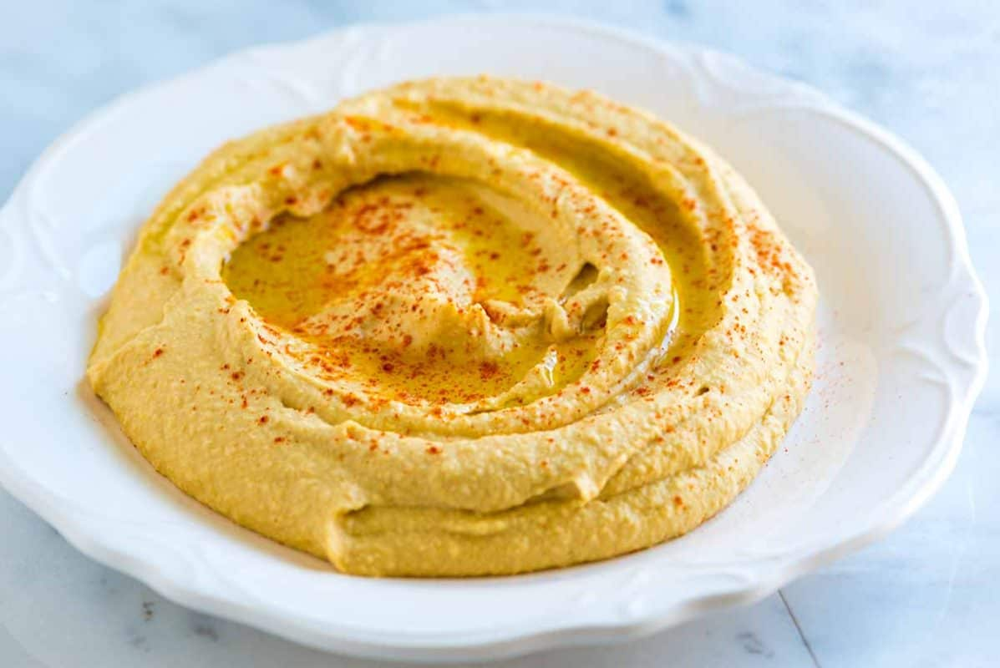

Humus

Description
Humus is very well known dish around mediterrenian. So it is quite popular in Turkey, as well.
It is easy to make, delicious and nutritious.
Ingredients
- A cup of chickpeas(soaked in water from the previous day).
- Tahini.
- Olive oil.
- Salt.
- Cumin powder
- Black pepper powder
- Lemon juice.
- Turmeric powder for color and more aroma
Steps
-
Put everything into the food processor and crush them all until it gets creamy.
- Eat it!